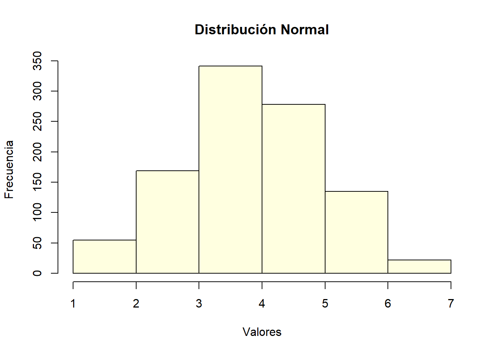
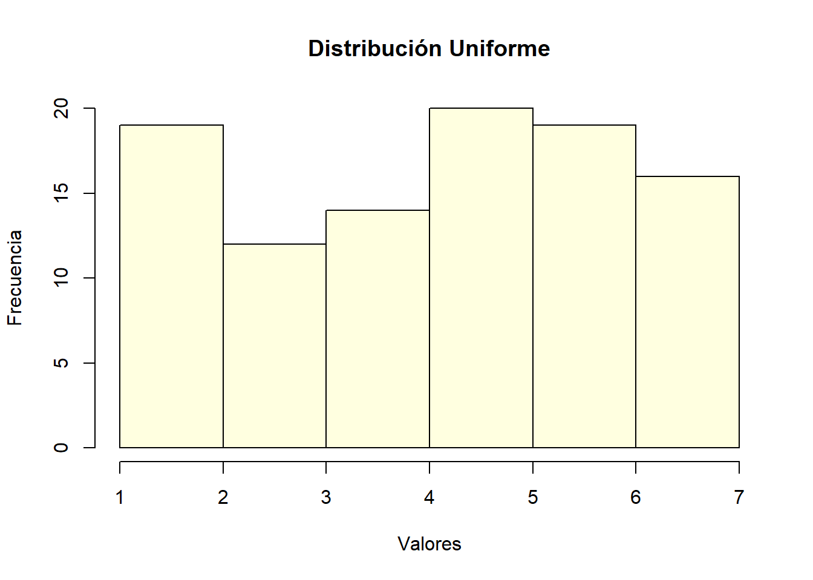
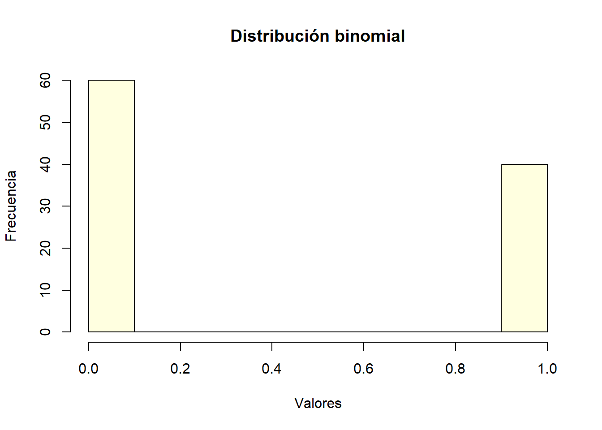

Sección 4 Simulación
Simular datos en R es una técnica útil para pruebas, experimentos o validaciones estadísticas sin necesidad de datos reales. Con funciones como rnorm(), runif(), sample(), y rbinom(), R permite generar datos que cumplen con ciertas distribuciones y características básicas, como la media, la desviación estándar, la cantidad de observaciones, entre otras.
4.1 Generación de Datos
4.1.1 Datos Normales:
Para generar datos con una distribución normal, se usa rnorm(n, mean, sd), donde:
nes el número de observaciones,
meanes la media,
sdes la desviación estándar.
datos_normales <- rnorm(1000, mean = 3.8, sd = 1.1)
# Imponer límites mínimo y máximo
minimo <- 1
maximo <- 7
datos_normales_lim <- ifelse(datos_normales < minimo, minimo,
ifelse(datos_normales > maximo, maximo, datos_normales))
hist(datos_normales_lim,
breaks = 7,
col = "lightyellow",
main = "Distribución Normal",
xlab = "Valores",
ylab = "Frecuencia")
4.1.2 Datos Uniformes:
Para una distribución uniforme, que genera valores entre un rango específico con la misma probabilidad, se usa runif(n, min, max):
nes el número de observaciones,
minymaxdefinen el rango.
datos_uniformes <- runif(100, min = 1, max = 7)
hist(datos_uniformes,
breaks = 7,
col = "lightyellow",
main = "Distribución Uniforme",
xlab = "Valores",
ylab = "Frecuencia")
4.1.3 Datos Binomiales:
Para datos binarios o con un número fijo de éxitos (p.ej., tiradas de moneda), se usa rbinom(n, size, prob), donde:
nes el número de observaciones,
sizees el número de ensayos,
probes la probabilidad de éxito en cada ensayo.
datos_binomiales <- rbinom(100, size = 1, prob = 0.5)
hist(datos_binomiales,
breaks = 12,
col = "lightyellow",
main = "Distribución binomial",
xlab = "Valores",
ylab = "Frecuencia")
4.2 Manipulación de Características de los Datos
4.2.1 Cambio de la media y desviación estándar:
La media y la desviación estándar se pueden ajustar en funciones como rnorm() para controlar la distribución y dispersión de los datos.
4.2.2 Tamaño de la muestra:
Ajustando el parámetro n, se modifica la cantidad de datos generados, lo cual es útil para realizar pruebas de análisis en conjuntos grandes o pequeños.
4.2.3 Rango de valores:
Para obtener valores en rangos específicos (p.ej., entre 0 y 100), runif() permite definir estos límites con min y max.
Estos métodos permiten generar datos con propiedades controladas, ayudando a diseñar experimentos o pruebas que se asemejan a escenarios reales y asegurando variabilidad y control en las simulaciones.
4.3 Creación de una base de datos en R
A continuación, crearemos una base de dato desde cero en este mismo entorno, practicando la creación de distintos objetos, vectores, matrices, y terminando por guardar una base de datos exportable. Recuerda que las características de cualquiera de estas variables puede ser modificada a nuestro antojo, y poder ajustarlas a nuestros propósitos particulares.
Para no repetir sistemáticamente el mismo número en caso que queramos modificarlo, definiremos el número de casos. Para esto, simplemente guardamos en un objeto el n deseado.
Partiremos por crear un vector identificador para un total de 200 casos. Para esto, utilizamos la función paste(), de modo que podamos asignar un código alfanumérico a cada fila que registre un caso.
Ahora, inventaremos que esta muestra de 200 personas tiene edades entre los 20 a 60 años de edad. Entonces, usamos la función sample() para crear un listado de 200 valores aleatorios entre 20 y 60, con posibilidad de reemplazo. Como se puede observar en el código, se utilizará la función set.seed() para fijar la semilla que produce la aleatorización, de modo tal que no variará cada vez que ejecutemos el código, lo que permitirá la reproducibilidad.
set.seed(123) # Para reproducibilidad
# Vector numérico
edades <- sample(20:60, 200, replace = TRUE)Aceleremos algo el proceso, creando una matriz matrix() en lugar de un sólo vector. Para esto, creemos aleatoriamente 200 valores tanto para altura (en cms) como para peso (kgs).
set.seed(123)
# Matriz de altura (cm) y peso (kg)
mx_altura_peso <- matrix(c(
sample(150:200, 200, replace = TRUE), # Altura en cm
sample(50:100, 200, replace = TRUE) # Peso en kg
), nrow = 200, byrow = FALSE)Demos nombres a las columnas (i.e., variables) usando la función colnames(), sobre la cual se asigna el listado de nombres, tal como si estuviésemos creando un objeto a través de una asignación <-. Usaremos la función head() para chequear que la matriz se haya dispuesto correctamente.
# Asignar nombres a las columnas
colnames(mx_altura_peso) <- c("Altura_cm", "Peso_kg")
# Inspeccionar los primeros casos de la matriz
head(mx_altura_peso)## Altura_cm Peso_kg
## [1,] 180 65
## [2,] 164 72
## [3,] 200 82
## [4,] 163 89
## [5,] 152 89
## [6,] 191 59Creemos una variable sin usar aleatorización. Por ejemplo, asignemos deliberadamente las distribuciones de la variable educación.
Entonces, asignaremos los primeros 90 casos a educación media completa, los segundos 70 a graduados universitarios, y los últimos 40 serán asignados con título de postgrado. Esto lo logramos haciendo uso de la función rep(), para repetir un valor de forma continua por un número determinado de veces.
# Factor de nivel educativo
nivel_educativo <- factor(c(rep("Media", 90), rep("Universitaria", 70), rep("Postgrado", 40)))Como cada variable está por su lado, crearemos una base de datos (i.e., dataframe) para unirlas todas en un mismo conjunto, a través de la función data.frame(). Esto, claro, asumiendo que cada una de las respuestas a todas las variables no sólo tienen la misma cantidad total de sujetos, sino que también cada sujeto ocupa la misma posición en el listado de datos.
# Crear el data frame
datos_sim01 <- data.frame(
id = id_vec,
edad = edades,
altura_cm = mx_altura_peso[, "Altura_cm"],
peso_kg = mx_altura_peso[, "Peso_kg"],
educacion = nivel_educativo
)
# Imprimir el data frame
head(datos_sim01)## id edad altura_cm peso_kg educacion
## 1 id 1 50 180 65 Media
## 2 id 2 34 164 72 Media
## 3 id 3 33 200 82 Media
## 4 id 4 22 163 89 Media
## 5 id 5 56 152 89 Media
## 6 id 6 33 191 59 Media4.3.1 Simulación de Variables Correlacionadas
En este ejemplo, generaremos ocho variables simuladas divididas en dos bloques. Las variables dentro de cada bloque tendrán correlaciones más altas entre sí, mientras que las correlaciones entre bloques serán más bajas. Esto debiese facilitar (si no asegurar) la emergencia de dos factores en un análisis factorial. Posteriormente, las incluiremos en la base de datos creada.
Definimos las dimensiones y las matrices de correlación.
pacman::p_load(MASS, psych, misty)
# Parámetros generales
n <- n_sim # Número de casos
num_bloque <- 4 # Número de variables por bloque
# Correlaciones dentro de los bloques
cor_alta <- 0.75
# Correlación baja entre elementos de distintos bloques
cor_baja <- 0.25Creamos la matriz de correlaciones, y la observamos para asegurarnos de que hemos creado los datos correctamente.
# Crear matriz base de correlación
cor_matrix <- matrix(cor_baja, nrow = 8, ncol = 8)
# Ajustar las correlaciones dentro de cada bloque
cor_matrix[1:4, 1:4] <- cor_alta
cor_matrix[5:8, 5:8] <- cor_alta
# Asegurar que la diagonal sea 1 (varianza de cada variable)
diag(cor_matrix) <- 1
# Imprimir la matriz de correlación
cor_matrix## [,1] [,2] [,3] [,4] [,5] [,6] [,7] [,8]
## [1,] 1.00 0.75 0.75 0.75 0.25 0.25 0.25 0.25
## [2,] 0.75 1.00 0.75 0.75 0.25 0.25 0.25 0.25
## [3,] 0.75 0.75 1.00 0.75 0.25 0.25 0.25 0.25
## [4,] 0.75 0.75 0.75 1.00 0.25 0.25 0.25 0.25
## [5,] 0.25 0.25 0.25 0.25 1.00 0.75 0.75 0.75
## [6,] 0.25 0.25 0.25 0.25 0.75 1.00 0.75 0.75
## [7,] 0.25 0.25 0.25 0.25 0.75 0.75 1.00 0.75
## [8,] 0.25 0.25 0.25 0.25 0.75 0.75 0.75 1.00Ahora definiremos arbitrareamente parámetros para simular datos que reproduzcan una matriz de correlaciones similar a la establecida previamente, como unas medias para las ocho variables, y un rango (aquí, 0 a 5).
# Medias y matriz de covarianza
medias <- rep(2.5, 8) # Medias para las 8 variables
mini <- 0
maxi <- 5La función mvrnorm() nos permitirá crear una distribución normal multivariada, bajo ciertos parámetros que hemos definido.
set.seed(123)
# Generar datos
datos_sim02 <- mvrnorm(n = n, mu = medias, Sigma = cor_matrix)
## aseguramos que ningún dato baje del mínimo
datos_sim02 <- ifelse(datos_sim02 < 0, 0, datos_sim02)
## aseguramos que ningún dato supere el máximo
datos_sim02 <- ifelse(datos_sim02 > 5, 5, datos_sim02)
## transformamos todos los valores creados a números enteros
datos_sim02 <- round(datos_sim02, 0)
## Chequeamos valores creados
table(datos_sim02)## datos_sim02
## 0 1 2 3 4 5
## 33 185 578 559 220 25# Convertir a un data.frame
datos_sim02 <- as.data.frame(datos_sim02)
# Nombrar las variables
names(datos_sim02) <- paste0("var", 1:8)
# Imprimir primeros casos para chequear que todo ande ok
head(datos_sim02)## var1 var2 var3 var4 var5 var6 var7 var8
## 1 4 5 4 4 2 2 1 1
## 2 3 3 4 3 2 2 2 1
## 3 2 1 1 1 2 1 2 1
## 4 3 3 3 2 2 2 2 2
## 5 2 2 2 2 3 3 2 2
## 6 1 1 1 1 1 1 2 1Prosigamos a estimar la matriz de correlación observada para estos datos, a través de la función cor(). Dado que es esperable que los resultados produzcan índices con múltiples decimales, haremos la matriz más simple visualmente redondeando los decimales a dos, a través del uso de round().
## var1 var2 var3 var4 var5 var6 var7 var8
## var1 1.00 0.70 0.64 0.68 0.22 0.24 0.18 0.15
## var2 0.70 1.00 0.65 0.69 0.21 0.23 0.16 0.11
## var3 0.64 0.65 1.00 0.66 0.21 0.23 0.16 0.11
## var4 0.68 0.69 0.66 1.00 0.15 0.23 0.18 0.16
## var5 0.22 0.21 0.21 0.15 1.00 0.65 0.67 0.65
## var6 0.24 0.23 0.23 0.23 0.65 1.00 0.62 0.66
## var7 0.18 0.16 0.16 0.18 0.67 0.62 1.00 0.69
## var8 0.15 0.11 0.11 0.16 0.65 0.66 0.69 1.004.4 Organizar y exportar base de datos
Una vez ya tenemos todos estos valores, juntaremos las dos bases de datos que tenemos hasta el momento, datos_sim01 y datos_sim02, en una misma base datos_sim. La función cbind() permite precisamente esto, al unir columnas para dos conjuntos de datos cuyas filas son exactamente las mismas.
## id edad altura_cm peso_kg educacion var1 var2 var3 var4 var5 var6 var7 var8
## 1 id 1 50 180 65 Media 4 5 4 4 2 2 1 1
## 2 id 2 34 164 72 Media 3 3 4 3 2 2 2 1
## 3 id 3 33 200 82 Media 2 1 1 1 2 1 2 1
## 4 id 4 22 163 89 Media 3 3 3 2 2 2 2 2
## 5 id 5 56 152 89 Media 2 2 2 2 3 3 2 2
## 6 id 6 33 191 59 Media 1 1 1 1 1 1 2 1Ahora, antes de proseguir a crear nuestro libro de código y exportar los datos, asignaremos una descripción breve a cada variable, de modo que podamos comunicar de qué se trata cada variable, más allá de los códigos que las identifican en la base de datos, los que usualmente no resultan demasiado informativos.
# Etiquetas variables
var.labels <- c(
id="identificador unico",
edad ="edad en años",
altura_cm ="altura en centrimetros",
peso_kg="peso en kilos",
educacion="nivel educativo",
var1="actitud 1",
var2="actitud 2",
var3="actitud 3",
var4="actitud 4",
var5="actitud 5",
var6="actitud 6",
var7="actitud 7",
var8="actitud 8")
# Incluir etiquetas a la base de datos
Hmisc::label(datos_sim) <- as.list(var.labels[match(names(datos_sim), names(var.labels))])
rm(var.labels) # elimina el objeto4.4.1 Libro de código
Para esta sección, debemos asegurarnos de haber cargado los siguientes paquetes.
Una alternativa relativamente completa es a través de la función codebook(), del paquete codebookr. Esta produce un documento al cual se le puede añadir bastante información, incluyendo una descripción de los datos.
Primero se crea un objeto codebook
codebook01 <- codebookr::codebook(
df = datos_sim,
title = "Datos sim",
subtitle = "Datos simulados para el taller de introducción en R 2025",
description = "La base de datos simulados DATOS SIMULADOS es un producto de los procesos realizados en el taller introductorio a R, realizado en Enero de 2025 en la UCN. Se trata de un conjunto de datos ficticios que contiene 13 variables en total, con 200 casos. Más información se puede encontrar en el repositorio público https://osf.io/xxxx. En caso de preguntas o comentarios, dirigirlos al Dr. Joaquín Bahamondes, jbahamondes@ucn.cl"
)Una vez contamos con el objeto codebook en nuestro entorno, podemos “imprimirlo” en un documento. Por ejemplo, el siguiente código lo exportará a un documento word.
Es posible que los libros de código creados por la función codebook() contengan más información de la que, para nuestros usos, consideramos necesaria. En R, es simple hacer libros de código más sencillos a través de la creación de tablas ad-hoc. Para esto es necesario haber incluido etiquetas (labels) a las variables; Cosa que ya hicimos con la función label().
# extract labels from dataframe and store as new object
codebook02 <- tibble::enframe(get_label(datos_sim))
# use more informative column names
colnames(codebook02) <- c("Variable", "Contenido")
# Show the new data frame
codebook02## # A tibble: 13 × 2
## Variable Contenido
## <chr> <chr>
## 1 id identificador unico
## 2 edad edad en años
## 3 altura_cm altura en centrimetros
## 4 peso_kg peso en kilos
## 5 educacion nivel educativo
## 6 var1 actitud 1
## 7 var2 actitud 2
## 8 var3 actitud 3
## 9 var4 actitud 4
## 10 var5 actitud 5
## 11 var6 actitud 6
## 12 var7 actitud 7
## 13 var8 actitud 8descriptives <- datos_sim %>% psych::describe() %>% as_tibble() %>% select("n","min","max","mean")
# add stats to codebook
codebook02 <- cbind(codebook02,descriptives)
codebook02$min <- round(codebook02$min, 2)
codebook02$max <- round(codebook02$max, 2)
codebook02$mean <- round(codebook02$mean, 2)# HTML codebook
colnames(codebook02) <- c("ID variable", "Contenido", "n", "min", "max", "media")
print(xtable(codebook02[-1, ]), type="html", file="../03_output/codebook_html.html")
# PDF codebook
pdf("../03_output/codebook_pdf.pdf", height=12, width=7)
grid.table(codebook02)
dev.off()
# excel codebook
write.xlsx(codebook02, file = "../03_output/codebook_xl.xlsx", colNames = TRUE)## png
## 24.4.2 Exportar datos
Para guardar los datos que hemos creado, utilizaremos la función write_sav(), que producirá un archivo .sav (de SPSS). Para establecer el directorio, usamos ../ para “retroceder” una carpeta. Es decir, dado que este código está (o debiese estar) ubicado en la carpeta 02_process, retornaremos a la carpeta general del proyecto, y luego entraremos a la carpeta 01_input. Luego de ejecutado el código, debiesemos poder observar la aparición de un archivo llamado datos_sim.sav en dicha carpeta. La dejaremos ahí para futuros ejemplos y ejercicios.